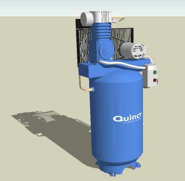

Is your next car going to be powered by compressed air? Probably not, but there are groups working with compressed air as an energy source for the usual transport suspects, i.e., cars and bikes, and also for energy storage in general. Though the energy density of compressed air is poor relative to fossil fuels, it scores well in terms of efficiency – if, and it’s a big if, you can raise its pressure to store energy and lower its pressure to recover energy at constant temperature (isothermal process) and with no heat transfer to the surroundings (adiabatic process).
Air Compressor


 Get our Blog feed
Get our Blog feed